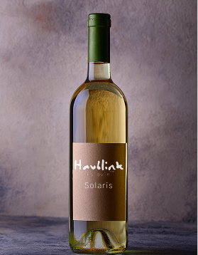
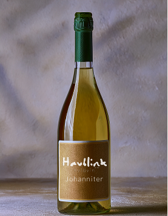
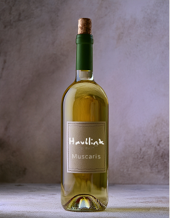
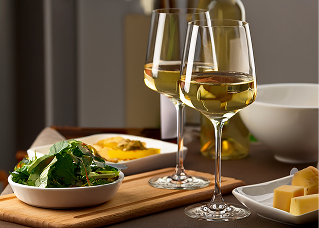
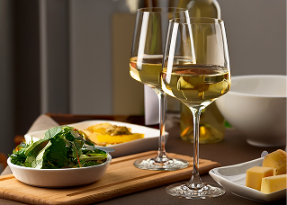

Havblink Solaris
En elegant og økologisk hvidvin lavet på Solaris-druen.
Frisk & Mineralsk
Havblink Johanniter
En økologisk hvidvin på Johanniter-druen, der kombinerer fylde og finesse.
Blød & Frugtig
Havblink Muscaris
En økologisk let krydret, frisk vin med god længde og kompleksitet.
Aromatisk & Krydret
Dansk vin i verdensklasse
"Hos Havblink Hvidvin gør vi en dyd ud af at forene dansk jord med international kvalitet. Vi stræber efter at skabe hvidvine, der ikke bare smager af Danmark, men som også kan begå sig blandt de bedste i verden."
-Klaus Jensen, medejer Havblink Hvidvin
Læs Mere Om Havblink Hvidvin →Vi guider dig til den rette vin
Hos Havblink Hvidvin hjælper vi dig med at finde den vin, der matcher både maden, stemningen og øjeblikket. Gå på opdagelse i vores vinguide – og få mere ud af hver eneste dråbe.
Gå Til Vinguide →
 
